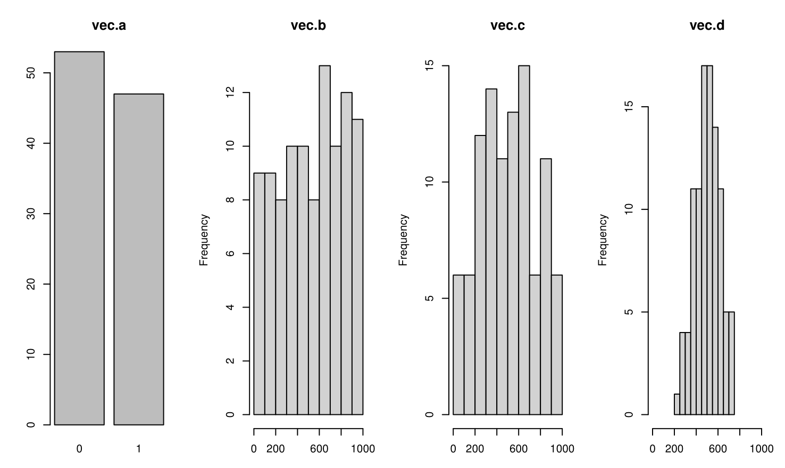
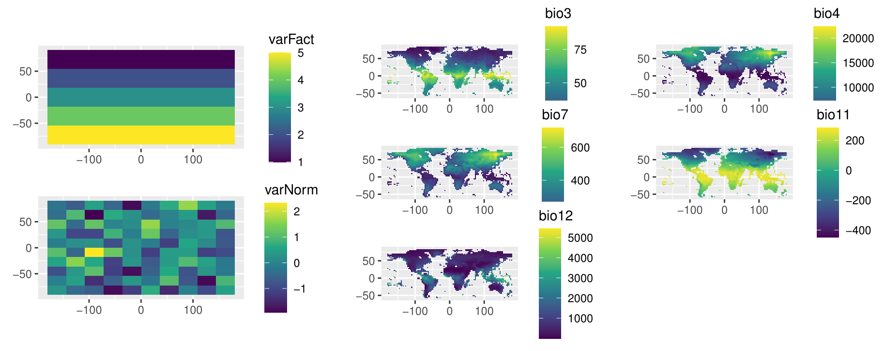

vignettes/examples_2_secundaryFunctions.Rmd
examples_2_secundaryFunctions.RmdHere are presented, in small and unlinked examples, secundary
functions (starting with bm_[...]) of biomod2.
Most of these functions are internally called by some main functions
(starting with BIOMOD_[...]) of biomod2, but
can be easily used as such.
## Generate a binary vector -------------------------------------------------------------
vec.a <- sample(c(0, 1), 100, replace = TRUE)
## Generate a 0-1000 vector (random drawing) --------------------------------------------
vec.b <- runif(100, min = 0, max = 1000)
## Generate a 0-1000 vector (biased drawing) --------------------------------------------
BiasedDrawing <- function(x, m1 = 300, sd1 = 200, m2 = 700, sd2 = 200) {
return(ifelse(x < 0.5, rnorm(1, m1, sd1), rnorm(1, m2, sd2)))
}
vec.c <- sapply(vec.a, BiasedDrawing)
vec.c[which(vec.c < 0)] <- 0
vec.c[which(vec.c > 1000)] <- 1000
## Generate a 0-1000 vector (normal distribution) ---------------------------------------
vec.d <- rnorm(100, 500, 100)
## Create simple simulated data ---------------------------------------------------------
myResp.sim <- sample(c(0, 1), 20, replace = TRUE)
myExpl.sim <- data.frame(var1 = sample(c(0, 1), 100, replace = TRUE),
var2 = rnorm(100),
var3 = 1:100)
## Create raster data -------------------------------------------------------------------
ras.1 <- ras.2 <- mask.out <- rast(nrows = 10, ncols = 10)
ras.1[] <- as.factor(rep(c(1, 2, 3, 4, 5), each = 20))
ras.2[] <- rnorm(100)
stk <- c(ras.1, ras.2)
names(stk) <- c("varFact", "varNorm")
## define a mask for already sampled points
mask.out[1:40] <- 1
## define a list of masks where we want to sample in priority
mask.in <- list(ras.1, ras.1)
mask.in[[1]][1:80] <- NA ## only level 5 should be sampled in this mask
mask.in[[1]][21:80] <- NA ## only levels 1 and 5 should be sampled in this mask
## Load real data ---------------------------------------------------------
data("DataSpecies")
myResp.real <- as.numeric(DataSpecies[, 'GuloGulo'])
data("bioclim_current")
myExpl.real <- rast(bioclim_current)
myCoord.real <- DataSpecies[, c('X_WGS84', 'Y_WGS84')]
myCoord.real.1 <- DataSpecies[which(myResp.real == 1), c('X_WGS84', 'Y_WGS84')]
myResp.real.raster <- classify(subset(myExpl.real, 1),
matrix(c(-Inf, Inf, 0), ncol = 3))
myResp.real.raster[cellFromXY(myResp.real.raster, myCoord.real.1)] <- 1
bm_SampleBinaryVector(obs = vec.a, ratio = 0.7)
bm_FindOptimStat(metric.eval = 'TSS', obs = vec.a, fit = vec.b)
bm_FindOptimStat(metric.eval = 'TSS', obs = vec.a, fit = vec.c, nb.thresh = 100)
vec.d_bin <- bm_BinaryTransformation(data = vec.d, threshold = 500)
vec.d_filt <- bm_BinaryTransformation(data = vec.d, threshold = 500, do.filtering = TRUE)
cbind(vec.d, vec.d_bin, vec.d_filt)
bm_MakeFormula(resp.name = 'myResp.sim',
expl.var = head(myExpl.sim),
type = 'quadratic',
interaction.level = 0)
samp1 <- bm_SampleFactorLevels(expl.var = stk, mask.out = mask.out)
samp2 <- bm_SampleFactorLevels(expl.var = stk, mask.in = mask.in)
samp3 <- bm_SampleFactorLevels(expl.var = stk, mask.out = mask.out, mask.in = mask.in)
# Compute SRE for several quantile values
sre.100 <- bm_SRE(resp.var = myResp.real.raster,
expl.var = myExpl.real,
new.env = myExpl.real,
quant = 0)
sre.095 <- bm_SRE(resp.var = myResp.real.raster,
expl.var = myExpl.real,
new.env = myExpl.real,
quant = 0.025)
sre.090 <- bm_SRE(resp.var = myResp.real.raster,
expl.var = myExpl.real,
new.env = myExpl.real,
quant = 0.05)
# Visualize results
res <- c(myResp.real.raster, sre.100, sre.095, sre.090)
names(res) <- c("Original distribution", "Full data calibration", "Over 95 percent", "Over 90 percent")
plot(res, zlim = c(0, 1))
mod <- glm(var1 ~ var2 + var3, data = myExpl.sim)
bm_VariablesImportance(bm.model = mod,
expl.var = myExpl.sim[, c('var2', 'var3')],
method = "full_rand",
nb.rep = 3)biomod2 data
# Format Data with true absences
myBiomodData <- BIOMOD_FormatingData(resp.var = myResp.real,
expl.var = myExpl.real,
resp.xy = myCoord.real,
resp.name = "Alien")
# Transform true absences into potential pseudo-absences
myResp.real.PA <- ifelse(myResp.real == 1, 1, NA)
myResp.real.PA.vect <- vect(cbind(myCoord.real, myResp.real.PA), geom = c("X_WGS84","Y_WGS84"))
# random method
PA.r <- bm_PseudoAbsences(resp.var = myResp.real.PA,
expl.var = myExpl.real,
nb.rep = 4,
nb.absences = 1000,
strategy = 'random')
# disk method
PA.d <- bm_PseudoAbsences(resp.var = myResp.real.PA,
expl.var = myExpl.real,
nb.rep = 4,
nb.absences = 500,
strategy = 'disk',
dist.min = 5,
dist.max = 35)
# SRE method
PA.s <- bm_PseudoAbsences(resp.var = myResp.real.PA,
expl.var = myExpl.real,
nb.rep = 4,
nb.absences = 1000,
strategy = 'sre',
sre.quant = 0.025)
# user.defined method
myPAtable <- data.frame(PA1 = ifelse(myResp.real == 1, TRUE, FALSE),
PA2 = ifelse(myResp.real == 1, TRUE, FALSE))
for (i in 1:ncol(myPAtable)) myPAtable[sample(which(myPAtable[, i] == FALSE), 500), i] = TRUE
PA.u <- bm_PseudoAbsences(resp.var = myResp.real.PA,
expl.var = myExpl.real,
strategy = 'user.defined',
user.table = myPAtable)
str(PA.r)
head(PA.r$pa.tab)
apply(PA.r$pa.tab, 2, table)
plot(PA.r)
head(PA.d$pa.tab)
apply(PA.d$pa.tab, 2, table)
plot(PA.d)
head(PA.s$pa.tab)
apply(PA.s$pa.tab, 2, table)
plot(PA.s)
tail(PA.u$pa.tab)
apply(PA.u$pa.tab, 2, table)
plot(PA.u)
# random selection
cv.r <- bm_CrossValidation(bm.format = myBiomodData,
strategy = "random",
nb.rep = 3,
k = 0.8)
# k-fold selection
cv.k <- bm_CrossValidation(bm.format = myBiomodData,
strategy = "kfold",
nb.rep = 2,
k = 3)
# block selection
cv.b <- bm_CrossValidation(bm.format = myBiomodData,
strategy = "block")
# stratified selection (geographic)
cv.s <- bm_CrossValidation(bm.format = myBiomodData,
strategy = "strat",
k = 2,
balance = "presences",
strat = "x")
# stratified selection (environmental)
cv.e <- bm_CrossValidation(bm.format = myBiomodData,
strategy = "env",
k = 2,
balance = "presences")
head(cv.r)
apply(cv.r, 2, table)
head(cv.k)
apply(cv.k, 2, table)
head(cv.b)
apply(cv.b, 2, table)
head(cv.s)
apply(cv.s, 2, table)
head(cv.e)
apply(cv.e, 2, table)